Dudsat - Reversing a Doppler-Disguised Permutation Cipher
Challenge Description
Category: Reverse Engineering
Difficulty: 🟡 Medium
Networks trust its timing. So does a clearing system that moves money across four countries. Six weeks ago someone quietly bought ORBIT-9. Last week the clearing system froze for eleven hours. Yesterday a regional airport logged position drift during a HELIOS-7 pass. Not accidents. Tests. A burned asset codenamed FERRYMAN pulled one file off an ORBIT-9 maintenance laptop before going dark. A binary,
lbproc, described internally as a link budget validation tool. Along with it: fourteen minutes of raw observation data from HELIOS-7’s last contact window. FERRYMAN’s final transmission was five words. The numbers are not noise. You have the binary. You have the log. The ground station is offline and the window is closing.
We get two files: a stripped ELF named lbproc and a binary log comms.dat. The “five words” line is the hint - the telemetry math is doing more than it admits.
TL;DR
- 48-byte telemetry packets in
comms.dat(26 of them) - Each packet has a carrier
v, a frequency-like fieldf, a measured valuem, plus signal/SNR thresholds - The binary computes
residual = m − (f / 418229116 + 1.0) × vfor every packet - The integer part of that residual (mod 256) indexes a permutation table at
.bss:0x4040c0 - The table is built before
mainby an.init_arrayconstructor, using a Fisher–Yates shuffle keyed by the classic Numerical Recipes LCG (seed0x20FC8) - The LOCK / NO-LOCK status printed by the binary is misdirection - every packet contributes a byte
- Concatenating the 26 looked-up bytes gives the flag
Initial Triage
file lbproc
lbproc: ELF 64-bit LSB executable, x86-64, version 1 (SYSV), dynamically linked,
interpreter /lib64/ld-linux-x86-64.so.2, BuildID[sha1]=6e41d29...,
for GNU/Linux 3.2.0, stripped
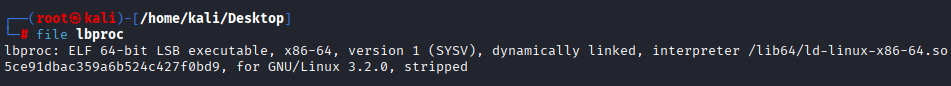
Stripped, dynamically linked, x86-64.
checksec --file=lbproc
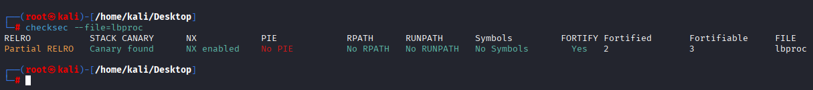
A first run gives clean satellite-style telemetry output:
./lbproc comms.dat
ORBIT-9 Solutions - Link Budget Processor v4.1.2
Contact window analysis: comms.dat
---------------------------------------------------
[2024-03-15T01:52:33Z] window=001 f0= 8025.000 MHz status=NO-LOCK
[2024-03-15T01:52:47Z] window=002 f0= 8025.000 MHz status=LOCK
[2024-03-15T01:53:01Z] window=003 f0= 8025.000 MHz status=LOCK
... (24 more windows) ...
[2024-03-15T01:58:23Z] window=026 f0= 8025.000 MHz status=NO-LOCK
---------------------------------------------------
Processed 26 windows. 24 acquired, 2 lost.
26 windows in, 26 status lines out. No flag printed. No HTB{ anywhere visible. The interesting state is internal, we need to look inside.
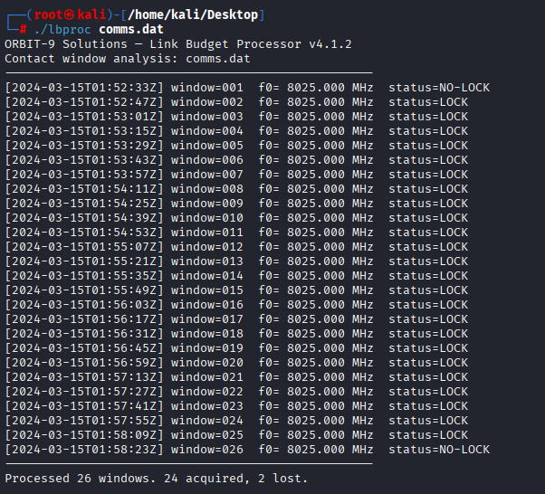
A strings lbproc | grep -i flag returns nothing. strings lbproc | grep HTB also nothing. The flag is computed, not stored.
Mapping the Binary
Loading lbproc into IDA (or Ghidra, or objdump -d for the patient) and looking at the function list reveals very few real functions, the binary is small.
0x4011b0 <unnamed> ← called from .init_array
0x401220 main ← entry point, called by __libc_start_main
0x401520 _start
0x4015d0 __do_global_dtors_aux
0x401590 __do_global_dtors_aux (variant)
The first thing worth noting: there are two entries in .init_array.
readelf -d lbproc | grep INIT_ARRAY
objdump -s -j .init_array lbproc
Contents of section .init_array:
403e08 00164000 00000000 b0114000 00000000 ..@.......@.....
That’s 0x401600 and 0x4011b0. The first is the standard frame_dummy. The second is a custom constructor that runs before main, and in a binary this small, that’s where I’d hide setup logic I don’t want sitting in plain sight inside main.
Hold that thought.
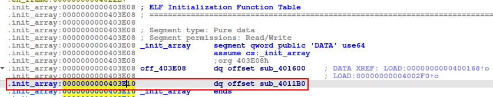
Reading main
main lives at 0x401220. Decompiled, the structure is roughly:
int main(int argc, char **argv) {
if (ptrace(PTRACE_TRACEME, 0, 0, 0) == -1) {
fwrite("lbproc: calibration check failed\n", 1, 33, stderr);
return 2;
}
if (argc != 2) { /* usage + return 1 */ }
FILE *fp = fopen(argv[1], "rb");
if (!fp) { perror("..."); return 1; }
puts("ORBIT-9 Solutions - Link Budget Processor v4.1.2");
printf("Contact window analysis: %s\n", argv[1]);
puts("---------------------------------------------------");
int acquired = 0, total = 0;
char buf[0x30];
while (fread(buf, 0x30, 1, fp) == 1) {
total++;
// ... parse fields, compute residual, decide LOCK / NO-LOCK ...
// ... printf telemetry line ...
if (locked) acquired++;
}
puts("---------------------------------------------------");
printf("Processed %d windows. %d acquired, %d lost.\n",
total, acquired, total - acquired);
fclose(fp);
return 0;
}
Three things jump out:
- Anti-debug.
ptrace(PTRACE_TRACEME, ...). If a debugger is already attached when this runs, ptrace returns-1and the binary exits with"calibration check failed". Disguised nicely as a calibration error. - Fixed-size records.
fread(buf, 0x30, 1, fp)- packets are exactly 48 bytes. - One byte is computed per packet but never printed. The format string is
"[%s] window=%03u f0=%9.3f MHz status=%s\n", it uses only the timestamp, window index, frequency, and status. The “hidden” byte is computed, stored on the stack, and… that’s it.
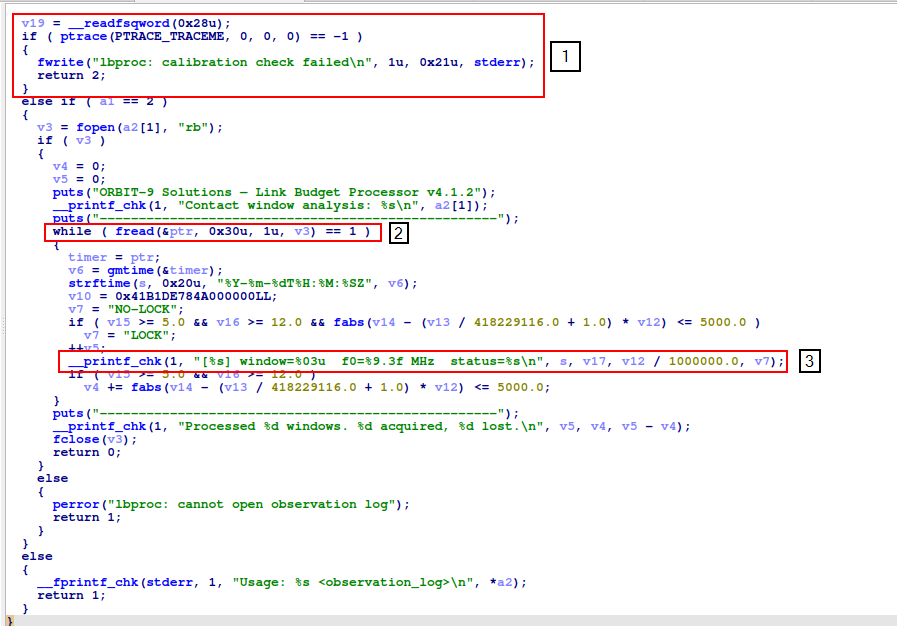
Defeating the ptrace check
The check happens exactly once, at the very top of main. There are several easy ways past it:
- NOP it: patch
call ptrace@plt(5 bytes at0x401252) tonops, or short-circuit thejeat0x40125b. LD_PRELOADa stub that makesptracereturn 0.- Break before it. Set the GDB breakpoint at the very first instruction of
main(0x401220), inspect what you need, then detach. This is what I’ll do below for the table dump, it’s the least invasive. - Or just use IDA to patch the instruction and save it.
If you follow the IDA route, you should do the following. Start by identifying the condition that we you to change:
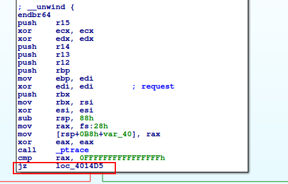
Then patch from JZ to JNZ with IDA:
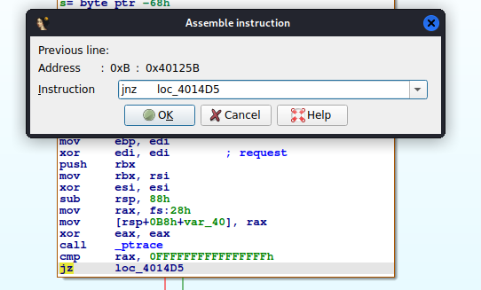
And now, you don’t have to worry with PTRACE again(Don’t forget to save the patched binary btw):
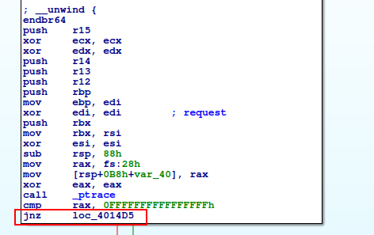
The Residual Computation
Zooming into the hot block of the loop (around 0x401322–0x40137d):
401322: movsd 0x30(%rsp),%xmm1 ; xmm1 = packet[0x10] → call this 'f'
401328: divsd 0xe58(%rip),%xmm1 ; /= [0x402188]
401330: addsd 0xe58(%rip),%xmm1 ; += [0x402190]
401338: movsd 0x38(%rsp),%xmm2 ; xmm2 = packet[0x18] → 'm'
401357: movsd 0x28(%rsp),%xmm0 ; xmm0 = packet[0x08] → 'v'
40136a: mulsd %xmm0,%xmm1 ; xmm1 = ((f / X) + Y) * v
40136e: subsd %xmm1,%xmm2 ; xmm2 = m − xmm1 ← RESIDUAL
401372: cvttsd2si %xmm2,%eax ; eax = (int)residual
401376: movzbl %al,%eax ; &= 0xff
401379: movzbl (%rdx,%rax,1),%eax ; eax = table[index]
40137d: mov %al,0x7(%rsp) ; stash byte on stack - never used again
So the hidden byte for each packet is:
byte = table[ (int)(m − (f / X + Y) × v) & 0xff ]
where %rdx was just loaded with lea 0x2d7b(%rip),%rdx → 0x4040c0 (the table address).
The constants X and Y are at 0x402188 and 0x402190 respectively. Reading .rodata:
import struct
with open('lbproc','rb') as f: d=f.read()
def cd(va, n=8): return struct.unpack('<d', d[va-0x402000+0x2000:][:n])[0]
print(cd(0x402180)) # 299792458.0
print(cd(0x402188)) # 418229116.0
print(cd(0x402190)) # 1.0
print(cd(0x402198)) # 5000.0
There are two numeric constants in the area worth noting:
| Address | Value | Role |
|---|---|---|
0x402180 |
299792458.0 |
Speed of light - loaded into rax, then never used. Pure scenery. |
0x402188 |
418229116.0 |
The actual divisor in the residual formula. |
0x402190 |
1.0 |
Additive constant. |
0x402198 |
5000.0 |
Threshold on ` |
⚠️ Gotcha worth calling out for anyone following along. The value
c = 299792458.0(speed of light) is loaded intoraxat0x40131band then clobbered without being read — it’s a red herring. The instruction sequence ismov 0x402180→rax; ... mov rax,0x18(rsp); movsd 0x18(rsp)→xmm0; movsd packet[0x08]→xmm0, the last write toxmm0overwrites it before any use. If you skim and assume “speed of light therefore Doppler shift,” you’ll plug299792458into the formula and your residuals will come out around−50000instead of+50— and no packet will look like a LOCK. (Don’t ask me how I know.)
Packet layout, decoded
By staring at register usage and a hex dump of the first few packets, the 48-byte record falls out:
offset size type meaning
------ ---- ------ ------------------------------------------------
0x00 8 int64 unix timestamp
0x08 8 double v - carrier frequency (≈ 8.025e9, the "f0" printed)
0x10 8 double f - Doppler-ish offset (small, ~thousands)
0x18 8 double m - measured / observed frequency
0x20 4 float signal level (gated against >= 5.0)
0x24 4 float SNR (gated against >= 12.0)
0x28 4 uint32 window index
0x2C 4 - padding
Quick sanity check on packet 1:
import struct
p = open('comms.dat','rb').read()[:0x30]
ts, v, f, m = struct.unpack_from('<qddd', p, 0)
print(v, f, m)
# 8025000000.0 6800.0 8025130528.450034
print((f/418229116 + 1) * v)
# 8025130478.72... → residual ≈ +49.73 ✓ matches GDB
That v = 8.025e9 lines up exactly with the f0= 8025.000 MHz the binary prints. Good, the layout is right.
The LOCK Gating Is Misdirection
After the residual is computed, three checks determine LOCK vs NO-LOCK:
40135d: movss [0x4021a8],%xmm3 ; 5.0
401365: comiss 0x40(%rsp),%xmm3 ; signal vs 5.0
401386: ja 0x4013b2 ; if 5.0 > signal: NO-LOCK
401388: movss [0x4021ac],%xmm1 ; 12.0
401390: comiss 0x44(%rsp),%xmm1 ; SNR vs 12.0
401395: ja 0x4013b2 ; if 12.0 > SNR: NO-LOCK
401397: andpd [0x4021b0],%xmm2 ; |residual|
40139f: comisd [0x402198],%xmm2 ; |residual| vs 5000.0
4013ae: cmovbe %rax,%r8 ; if <= 5000.0: "LOCK"
So LOCK ⇔ signal ≥ 5.0 ∧ SNR ≥ 12.0 ∧ |residual| ≤ 5000.0.
It looks load-bearing. It isn’t. The byte at byte = table[int(residual) & 0xff] is computed before these checks and regardless of their outcome - the checks only affect which string ("LOCK" or "NO-LOCK") is passed to printf. The hidden byte is collected from every packet, including the two NO-LOCKs.
This matters because the first packet (window 1) has signal = 0.0 and the last (window 26) has degraded signal/snr. Both yield NO-LOCK. If you naively filter to LOCKed packets only, you lose the H and the } and end up with TB{d0ppl3r_p3rm_l34k_h7b - close enough to look right, frustrating enough to waste an hour wondering why it’s broken.
⚠️ The “lock state” is flavor text - useful storytelling, not a filter.
The Permutation Table
%rdx = 0x4040c0 is the lookup base. That address is in .bss:
readelf -S lbproc | grep -E 'bss|data'
[25] .data PROGBITS 0000000000404078 00003078
[26] .bss NOBITS 00000000004040a0 00003088
.bss starts at 0x4040a0, and our table at 0x4040c0 sits 0x20 bytes in. .bss is zero-initialised at load - so the table must be populated at runtime. Back to that suspicious .init_array entry at 0x4011b0.
Phase 1 - identity init
4011b0: endbr64
4011b4: xor %eax,%eax
4011b6: lea 0x2f03(%rip),%rdi # 0x4040c0 ← the table
4011c0: mov %al,(%rdi,%rax,1) ; table[i] = (uint8_t)i
4011c3: add $0x1,%rax
4011c7: cmp $0x100,%rax
4011cd: jne 0x4011c0
Standard identity fill: for i in 0..255: table[i] = i.
Phase 2 - Fisher-Yates with a Numerical Recipes LCG
4011cf: lea 0x2fe9(%rip),%rcx # 0x4041bf ← &table[255]
4011d6: mov $0x100,%r9d
4011dc: mov $0x20fc8,%esi ; ← LCG seed
4011e1: sub %ecx,%r9d ; r9d = 0x100 − low32(rcx)
4011e8: imul $0x19660d,%esi,%esi ; ┐
4011ee: lea (%r9,%rcx,1),%r8d ; │ r8d = current range (0x100 → 1)
4011f2: xor %edx,%edx ; │
4011f4: sub $0x1,%rcx ; │ move pointer down
4011f8: add $0x3c6ef35f,%esi ; │ LCG: esi = esi*0x19660D + 0x3C6EF35F
4011fe: mov %esi,%eax ; │
401200: div %r8d ; │ edx = esi mod range
401203: movzbl 0x1(%rcx),%eax ; │ tmp = table[hi]
401207: movslq %edx,%rdx ; │
40120a: movzbl (%rdi,%rdx,1),%r8d ; │ table[hi] = table[edx]
40120f: mov %r8b,0x1(%rcx) ; │ table[edx] = tmp
401213: mov %al,(%rdi,%rdx,1) ; │ (i.e. swap)
401216: cmp %rdi,%rcx ; │
401219: jne 0x4011e8 ; ┘
40121b: ret
That’s a textbook Fisher–Yates shuffle. The PRNG is the famous Numerical Recipes linear congruential generator: state ← state × 0x19660D + 0x3C6EF35F (mod 2^32). The seed is hard-coded as 0x20FC8, which means the table is completely deterministic.
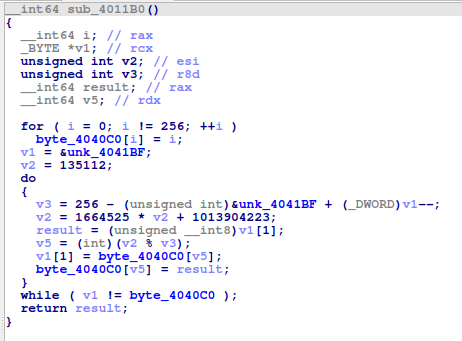
Recovering it - two paths
Path A: Dump it live from a running process (fast)
The ptrace check is at the top of main, so the constructor at 0x4011b0 runs first - by the time main is entered, 0x4040c0 already contains the shuffled table. Break at the first instruction of main (which is before the ptrace call) and read 256 bytes:
gdb -batch \
-ex 'break *0x401220' \
-ex 'run comms.dat' \
-ex 'x/256bx 0x4040c0' \
-ex 'quit' \
./lbproc
0x4040c0: 0xea 0x96 0x00 0x06 0x40 0x42 0x5d 0xb2
0x4040c8: 0x4a 0x7c 0xc4 0x0d 0x98 0x58 0x62 0x75
0x4040d0: 0xca 0x20 0x0c 0x18 0x49 0x22 0xa1 0x80
... 30 more lines ...
0x4041b8: 0x78 0x73 0xc5 0x3f 0x86 0xd3 0x39 0x87
⚠️ Don’t break later than
0x401220.startistops in the loader before.init_arrayhas fired (you’ll dump all zeros). Anywhere past0x401252is after the ptrace check has triggered exit, so the process is gone.
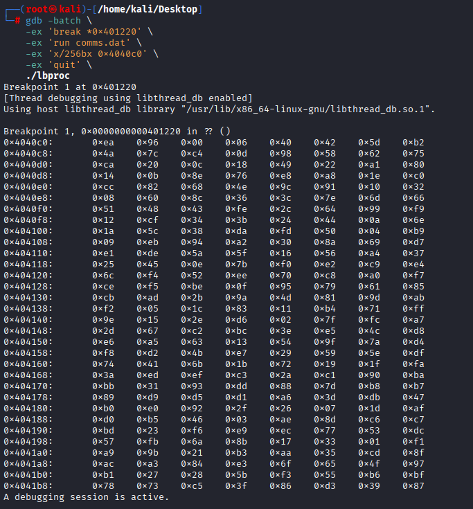
Path B: Re-derive it statically (clean)
Because the seed and the LCG constants are baked in, we can re-run the exact same shuffle in Python and skip the binary entirely:
MASK32 = 0xFFFFFFFF
# Phase 1: identity
table = list(range(256))
# Phase 2: emulate the constructor exactly (registers tracked the asm way)
BASE = 0x4040c0
END = 0x4041bf # &table[0xff]
rcx = END
r9d = (0x100 - (rcx & MASK32)) & MASK32 # so r9d + ecx = remaining range
esi = 0x20FC8 # LCG state
while True:
esi = (esi * 0x19660D + 0x3C6EF35F) & MASK32
r8d = (r9d + (rcx & MASK32)) & MASK32 # shrinks 0x100 → 1 over the loop
rcx -= 1
edx = esi % r8d
hi = (rcx + 1) - BASE
table[hi], table[edx] = table[edx], table[hi]
if rcx == BASE:
break
assert sorted(table) == list(range(256)) # sanity: still a permutation
print([hex(x) for x in table])
The first 16 bytes of table come out to ea 96 00 06 40 42 5d b2 4a 7c c4 0d 98 58 62 75 - byte-for-byte identical to the GDB dump. Two independent derivations agreeing is about as much confidence as you can get without patching the binary.
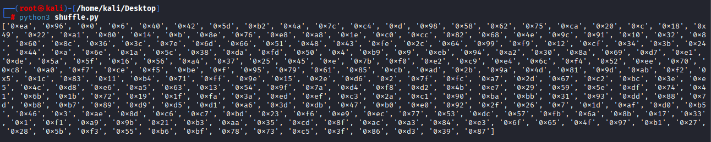
For reference, the full table as a 16×16 grid:
00 01 02 03 04 05 06 07 08 09 0a 0b 0c 0d 0e 0f
00: ea 96 00 06 40 42 5d b2 4a 7c c4 0d 98 58 62 75
10: ca 20 0c 18 49 22 a1 80 14 0b 8e 76 e8 a8 1e c0
20: cc 82 68 4e 9c 91 10 32 08 60 8c 36 3c 7e 6d 66
30: 51 48 43 fe 2c 64 99 f9 12 cf 34 3b 24 44 0a 6e
40: 1a 5c 38 da fd 50 04 b9 09 eb 94 a2 30 8a 69 d7
50: e1 de 5a 5f 16 56 a4 37 25 45 0e 7b f0 e2 c9 e4
60: 6c f4 52 ee 70 c8 a0 f7 ce f5 be 0f 95 79 61 85
70: cb ad 2b 9a 4d 81 9d ab f2 05 1c 83 11 b4 71 ff
80: 9e 15 2e d6 02 7f fc a7 2d 67 c2 bc 3e e5 4c d8
90: e6 a5 63 13 54 9f 7a d4 f8 d2 4b e7 29 59 5e df
a0: 74 41 6b 1b 72 19 1f fa 3a ed ef c3 2a c1 90 ba
b0: bb 31 93 dd 88 7d b8 b7 89 d9 d5 d1 a6 3d db 47
c0: b0 e0 92 2f 26 07 1d af d0 b5 46 03 ae 8d c6 c7
d0: bd 23 f6 e9 ec 77 53 dc 57 fb 6a 8b 17 33 01 f1
e0: a9 9b 21 b3 aa 35 cd 8f ac a3 84 e3 6f 65 4f 97
f0: b1 27 28 5b f3 55 b6 bf 78 73 c5 3f 86 d3 39 87
Putting It Together
The full extractor reads each 48-byte record, replays the residual computation, mods to a table index, and looks up the byte:
import struct
perm = [ # the table derived above
0xea,0x96,0x00,0x06,0x40,0x42,0x5d,0xb2,0x4a,0x7c,0xc4,0x0d,0x98,0x58,0x62,0x75,
0xca,0x20,0x0c,0x18,0x49,0x22,0xa1,0x80,0x14,0x0b,0x8e,0x76,0xe8,0xa8,0x1e,0xc0,
0xcc,0x82,0x68,0x4e,0x9c,0x91,0x10,0x32,0x08,0x60,0x8c,0x36,0x3c,0x7e,0x6d,0x66,
0x51,0x48,0x43,0xfe,0x2c,0x64,0x99,0xf9,0x12,0xcf,0x34,0x3b,0x24,0x44,0x0a,0x6e,
0x1a,0x5c,0x38,0xda,0xfd,0x50,0x04,0xb9,0x09,0xeb,0x94,0xa2,0x30,0x8a,0x69,0xd7,
0xe1,0xde,0x5a,0x5f,0x16,0x56,0xa4,0x37,0x25,0x45,0x0e,0x7b,0xf0,0xe2,0xc9,0xe4,
0x6c,0xf4,0x52,0xee,0x70,0xc8,0xa0,0xf7,0xce,0xf5,0xbe,0x0f,0x95,0x79,0x61,0x85,
0xcb,0xad,0x2b,0x9a,0x4d,0x81,0x9d,0xab,0xf2,0x05,0x1c,0x83,0x11,0xb4,0x71,0xff,
0x9e,0x15,0x2e,0xd6,0x02,0x7f,0xfc,0xa7,0x2d,0x67,0xc2,0xbc,0x3e,0xe5,0x4c,0xd8,
0xe6,0xa5,0x63,0x13,0x54,0x9f,0x7a,0xd4,0xf8,0xd2,0x4b,0xe7,0x29,0x59,0x5e,0xdf,
0x74,0x41,0x6b,0x1b,0x72,0x19,0x1f,0xfa,0x3a,0xed,0xef,0xc3,0x2a,0xc1,0x90,0xba,
0xbb,0x31,0x93,0xdd,0x88,0x7d,0xb8,0xb7,0x89,0xd9,0xd5,0xd1,0xa6,0x3d,0xdb,0x47,
0xb0,0xe0,0x92,0x2f,0x26,0x07,0x1d,0xaf,0xd0,0xb5,0x46,0x03,0xae,0x8d,0xc6,0xc7,
0xbd,0x23,0xf6,0xe9,0xec,0x77,0x53,0xdc,0x57,0xfb,0x6a,0x8b,0x17,0x33,0x01,0xf1,
0xa9,0x9b,0x21,0xb3,0xaa,0x35,0xcd,0x8f,0xac,0xa3,0x84,0xe3,0x6f,0x65,0x4f,0x97,
0xb1,0x27,0x28,0x5b,0xf3,0x55,0xb6,0xbf,0x78,0x73,0xc5,0x3f,0x86,0xd3,0x39,0x87,
]
DIV = 418229116.0
out = []
with open("comms.dat", "rb") as fp:
while chunk := fp.read(0x30):
if len(chunk) < 0x30: break
v, f, m = struct.unpack_from("<ddd", chunk, 8)
residual = m - (f / DIV + 1.0) * v
out.append(perm[int(residual) & 0xff])
print(bytes(out).decode())
Running it:
HTB{d0ppl3r_p3rm_l34k_h7b}
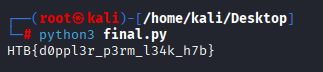
Reflection
What makes this challenge nice is how cleanly the misdirection is layered:
- The binary looks like a legitimate link-budget validator - strings, output format, file parser, even a plausible 8025 MHz S-band downlink frequency.
- The math looks like a Doppler residual calculation - there’s literally
c = 299792458.0sitting in.rodata, even though it’s never actually read. - The status output looks like the result - LOCK vs NO-LOCK is what the binary tells you about each packet. But it’s flavor, not signal.
- The actual flag computation is one short floating-point expression and a table lookup, executed every iteration with its output thrown on the floor.
Three traps to walk through, in order: the ptrace check (cheap, just break before it), the wrong constant (c is bait), and the LOCK filter (don’t drop windows 1 and 26).